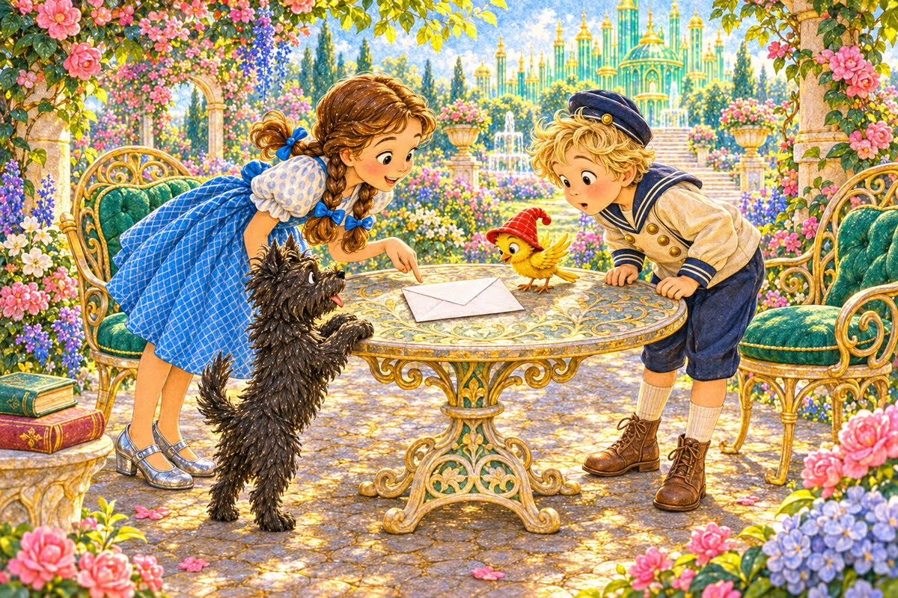
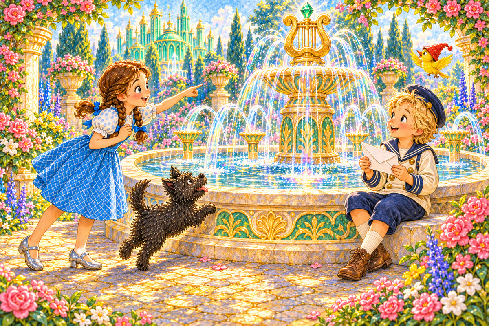
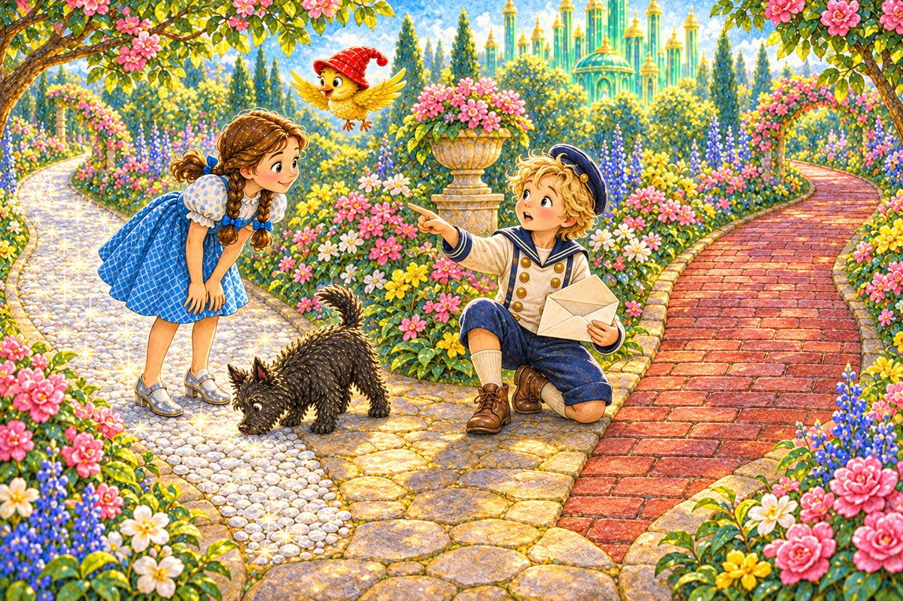
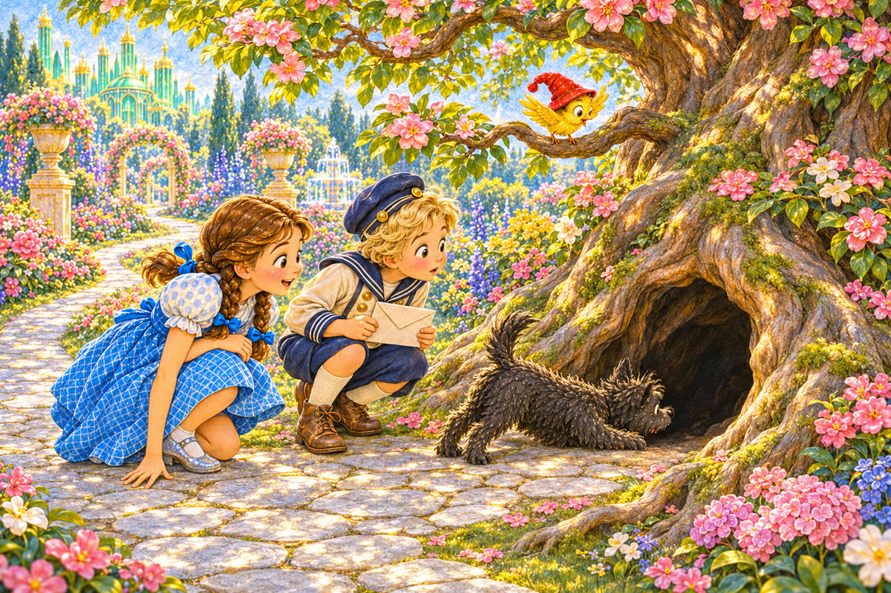
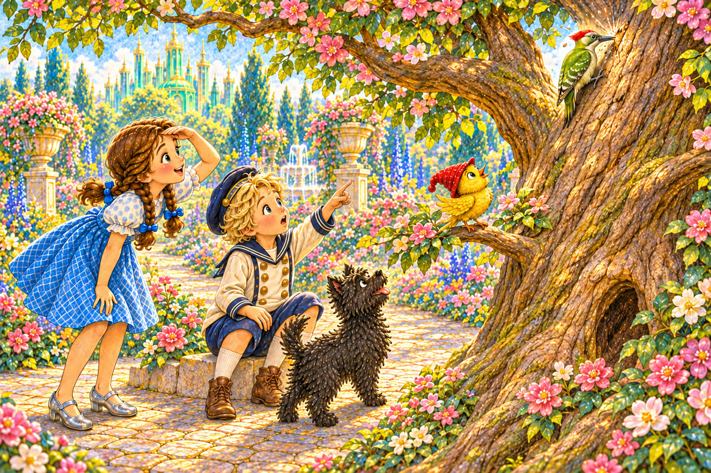
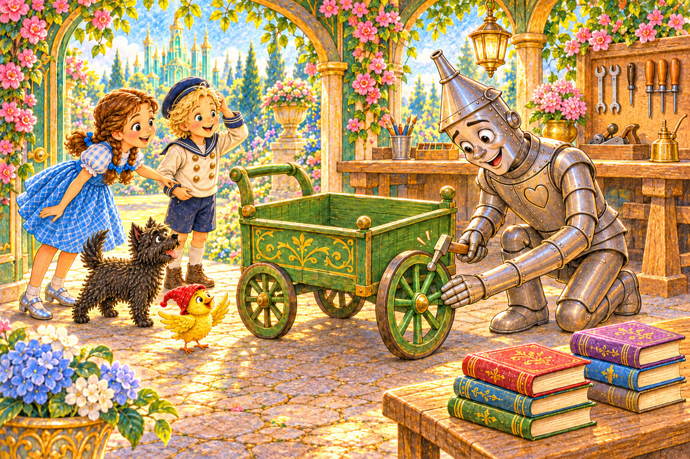
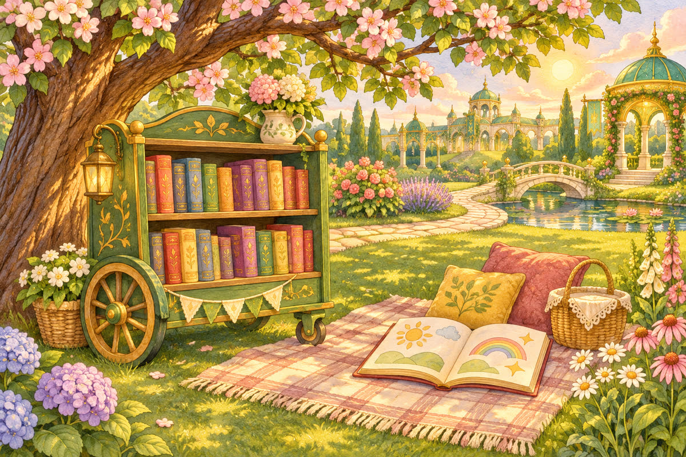

Pahina 1
Isang umaga, nakakita si Dorothy ng puting sobre sa mesa.
Nakasulat dito: “Para kay Dorothy, kay Toto, kay Button-Bright, at sa ibong dilaw.”
Isang munting kuwento sa Lupain ng Oz
Tatlong bagong pahina muna kung gusto mo. Pagkatapos, puwedeng ang mga kard ang pumili ng mga paboritong pahina.

Isang umaga, nakakita si Dorothy ng puting sobre sa mesa.
Nakasulat dito: “Para kay Dorothy, kay Toto, kay Button-Bright, at sa ibong dilaw.”
Binuksan ni Button-Bright ang sobre.
“May handog akong inihahanda,” isinulat ni Tin Woodman.
“Hanapin at sundan ninyo ang tatlong pahiwatig.”

Nasa loob ang unang pahiwatig: “Hanapin ang lugar kung saan umaawit ang tubig.”
“Ang bukal!” sabi ni Dorothy.
Tumakbo roon si Toto.
Sa likod ng bukal, nakita ng ibon ang ikalawang sobre.
Nakasabit ito sa mababang sanga.
Kinuha iyon ni Button-Bright.

“Sundan ang mga batong kumikislap,” basa niya.
Dalawang landas ang nasa harap nila.
Ang isa ay may mapuputing bato; ang isa ay may pulang ladrilyo.

Sinundan nila ang mapuputing bato.
Paikot ang landas at nagtapos sa punong may malaking butas.
Sumilip si Toto sa loob.
Nasa loob ng puno ang ikatlong pahiwatig: “Makinig sa marahang tok-tok. Doon ninyo makikita ang handog.”
Natahimik ang lahat.

May narinig silang tok-tok mula sa itaas.
“Iyon kaya?” tanong ni Button-Bright.
Tumingala sila, ngunit isang berdeng ibon lamang ang tumutuka sa puno.
Pagkaraan, may narinig silang mabagal at pantay na tok-tok mula sa munting pagawaan.
“Doon!” sabi ni Dorothy.
Sinundan nila ang tunog.

Sa loob, pinupukpok ni Tin Woodman ang gulong gamit ang martilyo.
May maliit na berdeng kariton sa tabi niya.
“Nahanap ninyo ako!” sabi niya.
“Ito ang kariton ng mga aklat para sa hardin,” paliwanag niya.
Tumulong silang maglagay ng mga aklat.
Pagkatapos, hinila nila ang kariton patungo sa lilim.

Naghihintay si Ozma sa ilalim ng puno.
Pumili siya ng aklat, at umupo ang lahat sa damuhan.
Mula noon, may kuwentong mababasa sa hardin.
Kung gusto ninyong mag-usap